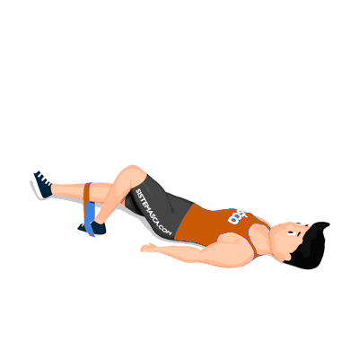

Elevação Quadril Unilateral com Faixa Elástica

O exercício fortalece os músculos do glúteo, com ênfase no Glúteo Máximo. Também melhora a estabilidade de quadril, tronco e mobilidade da coluna vertebral.
Ficha Técnica
Tipo: Funcional
Grupo Muscular: Glúteo
Aparelho: Nenhum
Músculos: Nenhum
Como realizar
- Partindo da posição em decúbito ventral (deitado de barriga para cima);
- Estenda uma perna colocando o mini band na altura da canela e a outra perna ficará com joelhos e quadril flexionados, com o mini band sendo pressionado no solo;
- Em seguida, fazer uma elevação do quadril levantando a perna estendida, e a depressão do mesmo sem tocar o solo.
 RC STORE
RC STORE